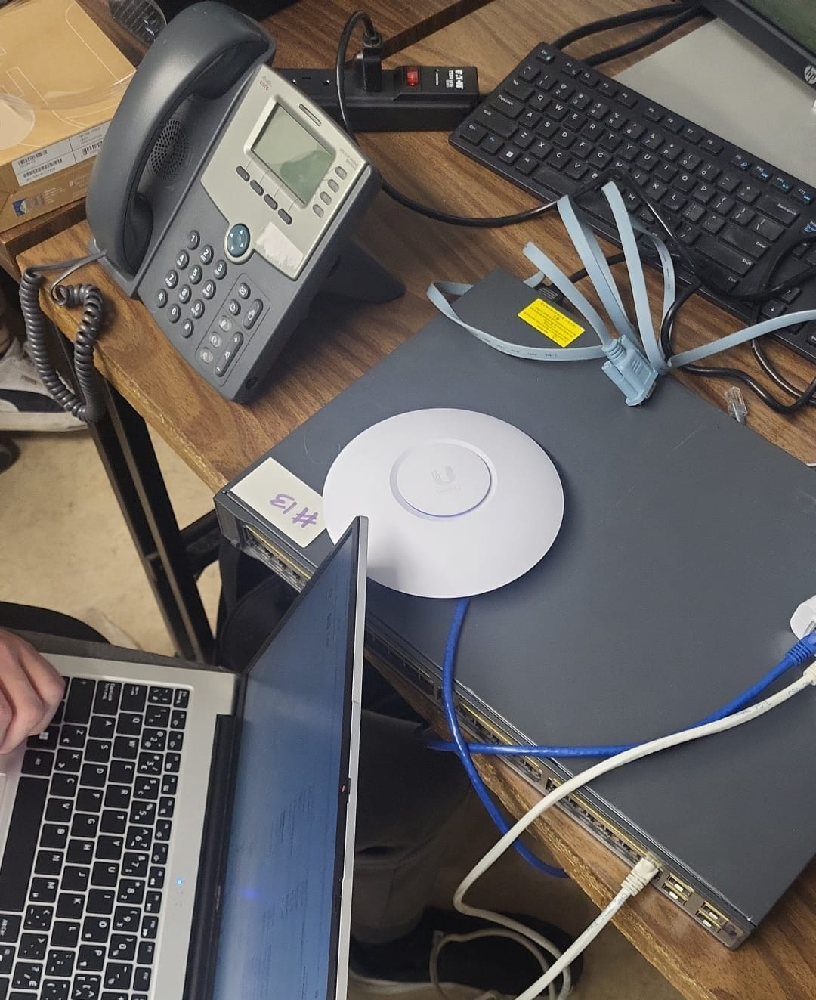
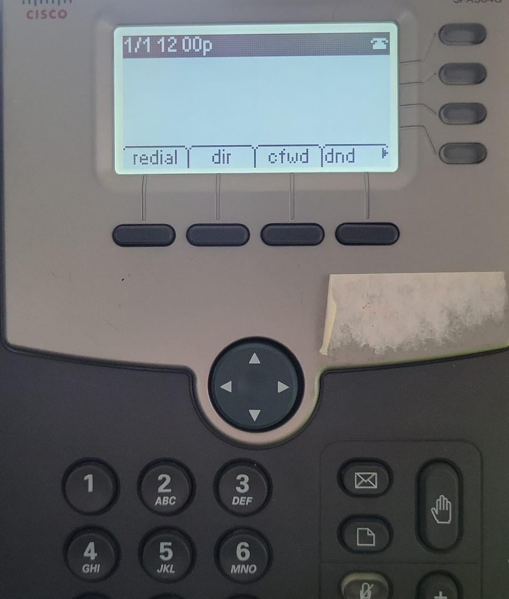
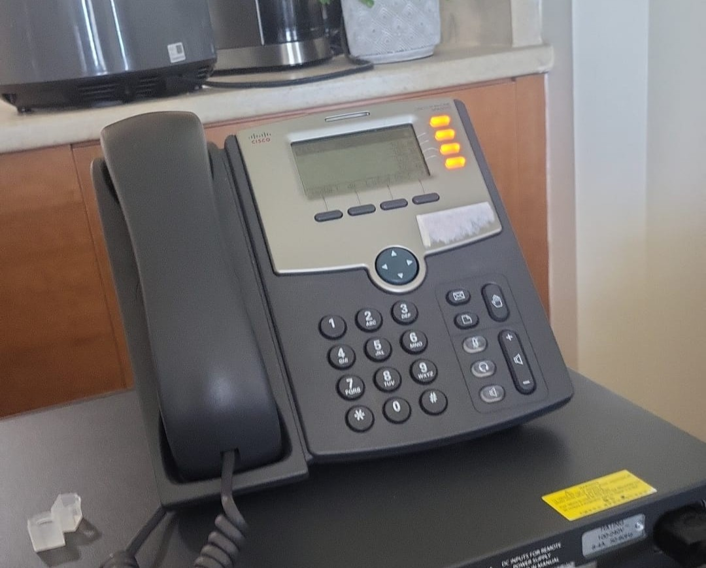

Designed and deployed a segmented network infrastructure on a physical Cisco 3750 switch, configuring 5 VLANs with dedicated DHCP pools and Switch Virtual Interfaces to enable inter-VLAN routing at Layer 3. Integrated a Ubiquiti UniFi U6 Lite access point via 802.1Q trunk, provisioning dual SSIDs mapped to separate VLANs with client isolation to secure guest wireless traffic. Configured a Cisco SPA504G IP phone on a dedicated Voice VLAN to isolate VoIP traffic from data. Enabled SSH on the switch for secure remote management. Also designed a full network expansion proposal for a medical facility including firewall deployment, site-to-site VPN, remote access VPN, and scalable NAS storage upgrade.
Hardware:
Cisco 3750 Switch
Ubiquiti UniFi U6 Lite AP
Cisco SPA504G IP Phone
Software / Tools:
PuTTY — to conect to the switch via SSH/console
Ubiquiti UniFi Controller — to configurate the SSIDs y VLANs of the AP
Packet Tracer — diagram of the topology